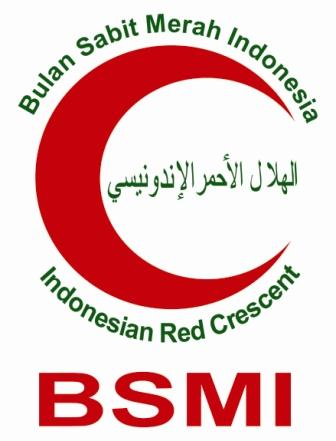

| 1 | Executive Summary & Latar Belakang | 3 |
| 2 | Tujuan & Manfaat Strategis (Goals) | 3 |
| 3 | Matriks Ruang Lingkup Fitur (12 Modul) | 4 |
| 4 | Spesifikasi Arsitektur & Teknologi | 5 |
| 5 | Tahapan Pengerjaan (Project Timeline) | 6 |
| 6 | Estimasi Investasi & Rencana Anggaran Biaya (RAB) | 6 |
| 7 | Nilai Tambah & Keuntungan Strategis | 7 |
| 8 | Penutup & Lembar Pengesahan | 8 |
Dokumen ini bersifat Rahasia dan ditujukan khusus untuk pihak yang berkepentingan.
Dilarang menyalin, menyebarluaskan, atau menggunakan isi dokumen ini tanpa izin tertulis dari Tim Pengembang BSMI Hub.
Bulan Sabit Merah Indonesia (BSMI) merupakan organisasi kemanusiaan terdepan yang memegang peranan vital dalam tanggap bencana, pelayanan kesehatan gratis, serta pemberdayaan sosial masyarakat. Seiring dengan meluasnya jaringan cabang, bertambahnya relawan, serta semakin kompleksnya program aksi di lapangan, kebutuhan akan efisiensi pengelolaan data menjadi sangat mendesak.
Pengelolaan administrasi yang masih mengandalkan pencatatan manual atau spreadsheet terpisah kerap memicu beberapa kendala operasional yang signifikan:
BSMI Hub hadir sebagai solusi sistem terintegrasi berbasis web untuk mendigitalisasi seluruh rantai operasional BSMI — mulai dari pendataan anggota, manajemen tanggap bencana, kontrol logistik, hingga transparansi kas keuangan secara real-time.
Akses berbasis web dari PC, Tablet, & Smartphone kapan saja.
Database terpusat aman dengan skema backup otomatis.
Monitoring stok bantuan & donasi secara presisi.
Sistem dirancang dengan arsitektur 12 Modul Utama yang saling terinterkoneksi untuk mengakomodir seluruh kebutuhan operasional organisasi:
| No | Modul Sistem | Deskripsi Fungsi Operasional |
|---|---|---|
| 01 | Dashboard Analitik | Central Command Center: Menampilkan ringkasan data anggota, stok logistik, dan laporan keuangan dalam bentuk grafik interaktif. |
| 02 | Profil Organisasi | Pengaturan identitas cabang, visi-misi, susunan pengurus, dan konfigurasi legalitas organisasi. |
| 03 | Database Anggota & Relawan | Profiling lengkap (NIK, Gol. Darah, Keahlian/Spesialisasi, Riwayat Diklatsar, Status Mobilisasi). |
| 04 | Struktur Pengurus & Divisi | Pemetaan hierarki jabatan, masa bakti, dan delegasi wewenang kerja di tingkat pusat maupun cabang. |
| 05 | Program & Kegiatan | Penjadwalan aksi kemanusiaan, penugasan personel lapangan, serta dokumentasi laporan kegiatan. |
| 06 | Penerima Manfaat | Pendataan korban bencana atau masyarakat penerima bantuan guna mencegah tumpang tindih distribusi. |
| 07 | Inventaris & Logistik | Pencatatan barang masuk/keluar gudang, barcode/SKU tracking, serta alert saat stok menipis. |
| 08 | Keuangan & Iuran | Buku Kas otomatis, manajemen iuran wajib anggota, donasi terikat/tidak terikat, dan rekapan pengeluaran. |
| 09 | Diklatsar & Sertifikasi | Pendataan modul pelatihan internal, status kelulusan peserta, dan arsip sertifikat digital. |
| 10 | Pusat Informasi | Internal Notice Board untuk penyebaran instruksi resmi, berita organisasi, dan SOP kebencanaan. |
| 11 | Pelaporan & Auto-Export | Kemampuan mencetak laporan periodik dalam format PDF dan Excel secara instan. |
| 12 | Role-Based Access Control | Keamanan multi-level: Hak akses berjenjang (Super Admin, Pengurus Pusat, Admin Cabang, Relawan). |
Aplikasi ini dibangun menggunakan Tech-Stack enterprise terkini untuk menjamin stabilitas, kecepatan tinggi, dan kemudahan perawatan jangka panjang:
Framework PHP enterprise standard dengan tingkat keamanan dan performa tinggi.
Menyajikan pengalaman UI ultra-cepat tanpa loading antar halaman.
Interface modern, bersih, dan 100% responsif di smartphone & tablet.
Database relasional handal dengan high-availability & performa optimal.
Keamanan menjadi prioritas utama dalam pengembangan BSMI Hub. Berikut adalah lapisan keamanan yang diterapkan:
Sistem di-hosting menggunakan infrastruktur cloud yang menjamin ketersediaan tinggi (high availability) dengan spesifikasi:
Total estimasi waktu pengerjaan proyek adalah 6 Minggu dengan pembagian fase sebagai berikut:
Pengumpulan data, wawancara kebutuhan pengguna, perancangan struktur database, dan wireframing UI.
Pembangunan sistem otentikasi, hak akses multi-level, dan seluruh endpoint API.
Pembuatan antarmuka interaktif untuk seluruh 12 modul, grafik dashboard, dan responsivitas mobile.
Pengujian menyeluruh, perbaikan bug, audit keamanan, dan optimasi performa.
Migrasi ke server produksi, pelatihan pengurus, dokumentasi manual book, dan serah terima resmi.
| No | Komponen Pekerjaan | Estimasi Biaya |
|---|---|---|
| 1 | UI/UX Design & Prototyping Design System, Responsive Mobile Layout, Wireframe |
Rp 5.000.000 |
| 2 | Backend Engineering Laravel 12 Engine, RBAC Security, Database Architecture |
Rp 12.000.000 |
| 3 | Frontend Engineering React.js, Inertia.js, Dynamic Analytics Dashboard |
Rp 10.000.000 |
| 4 | Cloud Infrastructure Setup (1 Tahun) Domain, SSL Certificate, Cloud Hosting & Database Server |
Rp 1.500.000 |
| 5 | Testing, Training, & Documentation Manual Book, User Training Session, Handover |
Termasuk |
| ESTIMASI TOTAL INVESTASI | Rp 28.500.000 | |
| Aspek | Sebelum (Manual) | Sesudah (BSMI Hub) |
|---|---|---|
| Pendataan Anggota | Spreadsheet terpisah, rawan duplikasi | Database terpusat, pencarian instan |
| Monitoring Logistik | Rekap manual akhir bulan | Real-time dengan alert otomatis |
| Laporan Keuangan | Butuh 3-5 hari kerja | Instan (PDF/Excel 1 klik) |
| Akses Data | Hanya dari komputer kantor | Kapan saja, dari mana saja |
| Keamanan Data | File lokal rentan hilang/rusak | Enkripsi + backup harian |
Demikian proposal pengembangan Sistem Manajemen Organisasi (BSMI Hub) ini kami ajukan dengan penuh keyakinan. Kami percaya bahwa modernisasi infrastruktur digital ini akan membawa dampak positif yang masif bagi efisiensi gerakan kemanusiaan Bulan Sabit Merah Indonesia.
Dengan diimplementasikannya sistem ini, diharapkan seluruh proses operasional — mulai dari pendataan anggota, manajemen logistik, pengelolaan keuangan, hingga pelaporan — dapat berjalan secara transparan, akuntabel, dan efisien. Hal ini pada akhirnya akan memperkuat kapasitas organisasi dalam memberikan pelayanan kemanusiaan yang lebih cepat, tepat, dan berdampak luas kepada masyarakat yang membutuhkan.
Besar harapan kami proposal ini dapat dipertimbangkan dan disetujui demi kemajuan bersama. Kami siap untuk melakukan presentasi lebih lanjut serta menjawab segala pertanyaan yang berkaitan dengan proposal ini.
Hormat kami,
Tim Pengembang BSMI Hub — Siap Melayani Transformasi Digital Kemanusiaan Indonesia.
Dengan menandatangani dokumen ini, kedua belah pihak menyatakan persetujuan atas ruang lingkup,
timeline, dan estimasi biaya yang tertera dalam proposal ini.
Diajukan Oleh,
(...............................)
Lead Developer / Project Manager
Tim Pengembang BSMI Hub
Menyetujui,
(...............................)
Perwakilan Pengurus
Bulan Sabit Merah Indonesia